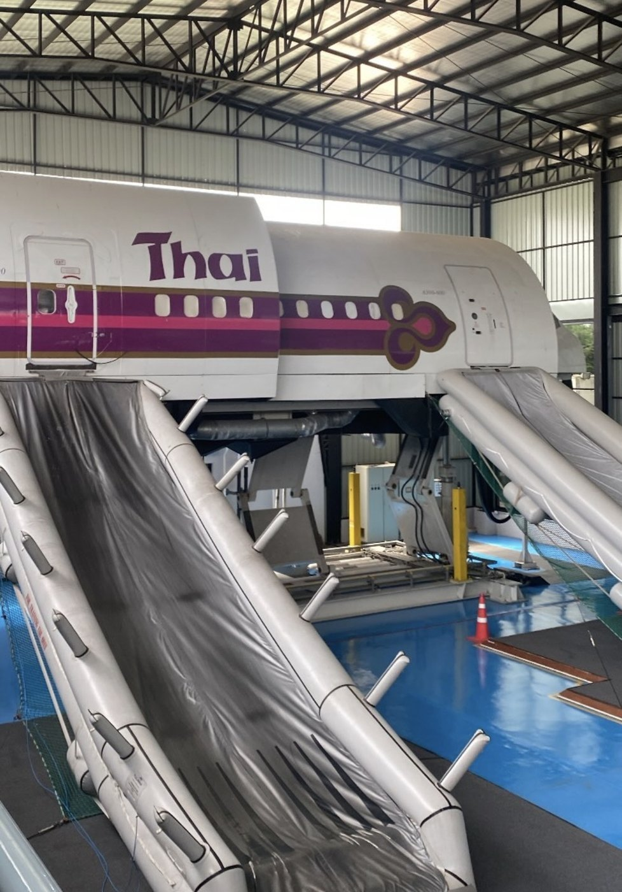
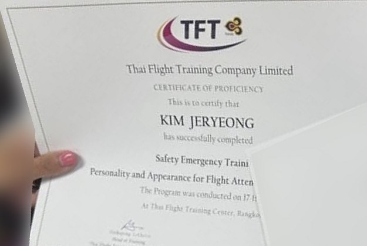
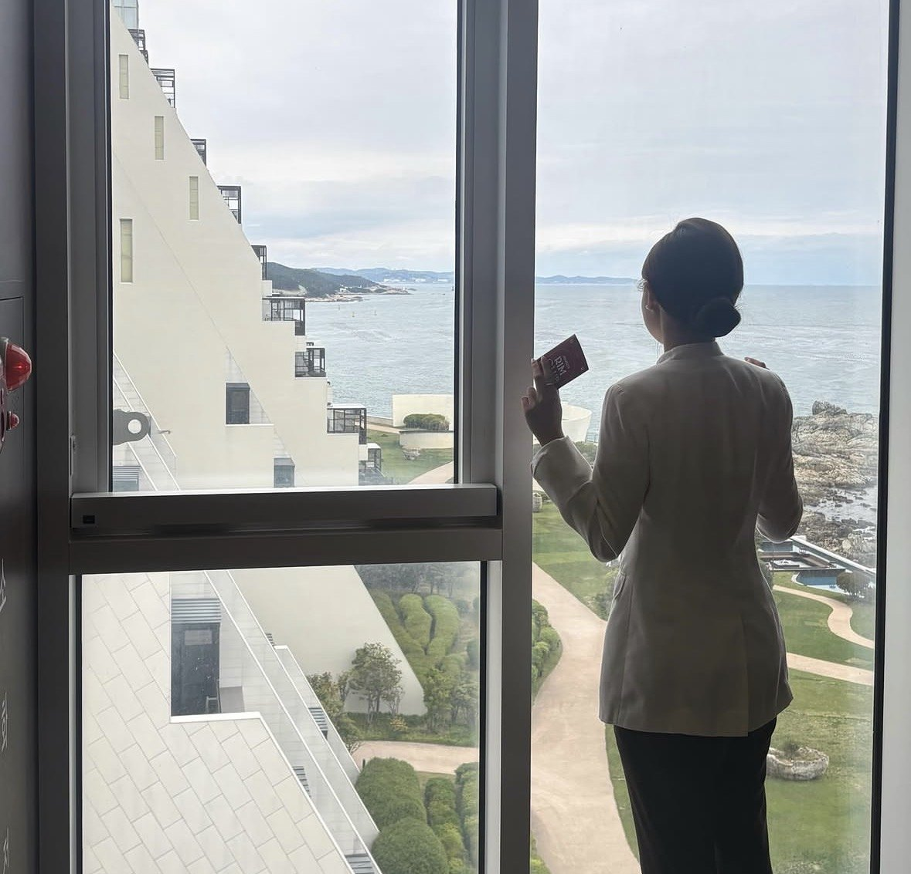
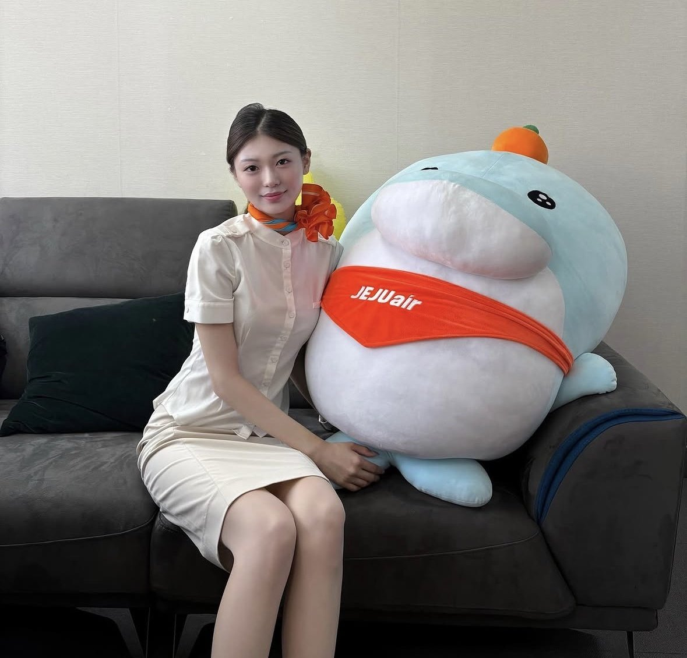
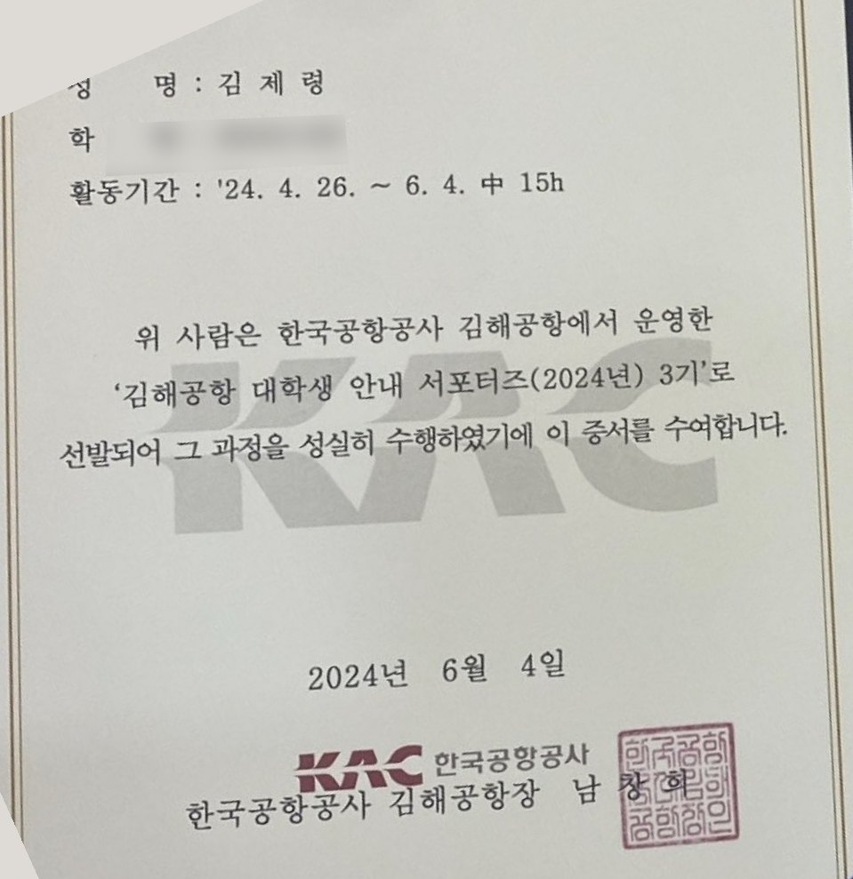

타이항공 훈련센터(TFT) 객실훈련
- 경험
- 실제 물에서 진행하는 비상착수 훈련에 참여해 비상 상황의 탈출 절차를 직접 익혔습니다. 승무원 이미지·메이크업 실습도 함께 수료했습니다.
- 배움
- 객실승무원에게 가장 중요한 것은 안전 의식, 그리고 침착하고 신속한 대응이라는 점을 몸으로 이해했습니다.
부산외국어대학교 e-포트폴리오
꿈을 향해 도전하고, 경험으로 증명하다.

01 · ABOUT ME

객실승무원이라는 꿈을 향해 꾸준히 도전하고 성장하는 사람입니다.
전공 실습과 서비스 현장, 글로벌 활동과 대외활동에 적극적으로 참여하며 객실승무원에게 필요한 역량을 하나씩 쌓아 왔습니다.
꿈꿀 수 있다면, 현실이 될 수 있다.
02 · FLIGHT LOG
03 · SAFETY FIRST




04 · SERVICE

부서 근무평가 1위


05 · CARE & GLOBAL
청각장애인 승객이 기내에서 겪을 수 있는 의사소통의 어려움에 주목했습니다.
원활한 소통을 돕는 수어 앱 제작 프로젝트에 참여해, 승객의 입장에서 해결 방법을 고민했습니다.
장애 유무와 관계없이 모두가 편안한 항공 서비스, 곧 포용적 서비스의 중요성을 배웠습니다.
지구본은 끌어서 돌려 볼 수 있습니다.

해외 환경에서 공부하고 다양한 문화를 접하며, 글로벌 환경에 대한 적응력과 외국어 역량을 키웠습니다.
한국어 학습을 도우며 서로 다른 언어와 문화를 이해하고 소통하는 경험을 쌓았습니다.
06 · ACHIEVEMENTS

항공서비스학과 팀으로 참여해, 진로와 관련된 아이디어와 활동을 바탕으로 수상했습니다.
학우들을 위한 복지 활동에 참여했습니다. 구성원과 의견을 나누고 함께 움직이며 협력과 소통의 중요성을 배웠습니다.
07 · NEXT DESTINATION
NOW BOARDING
어떤 상황에서도 고객의 안전과 편안함을 최우선으로 생각하겠습니다.
외국어 역량과 서비스 전문성을 꾸준히 발전시키겠습니다.
동료들과 협력하고, 책임감 있게 행동하겠습니다.
DREAM TO REALITY — 김제령